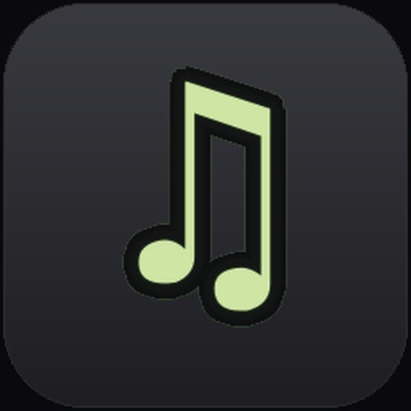
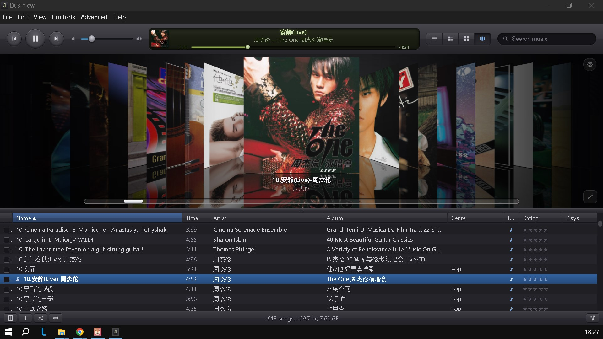
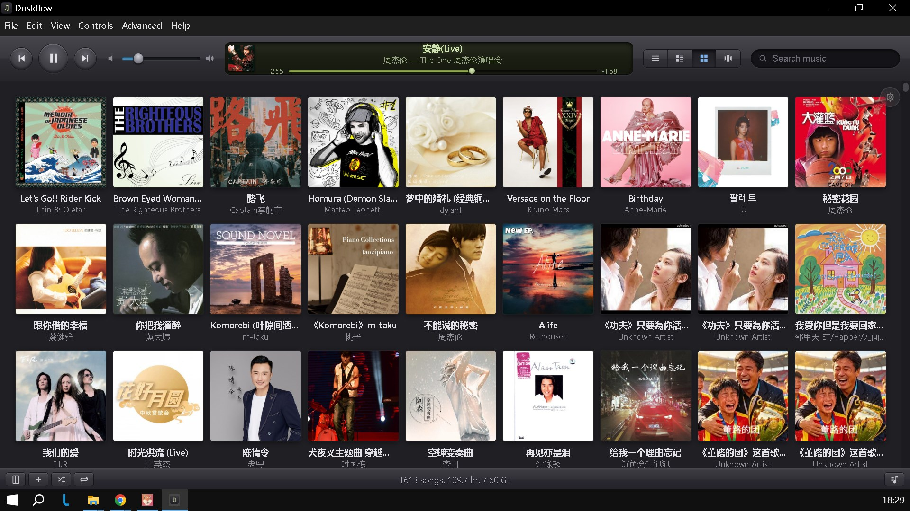
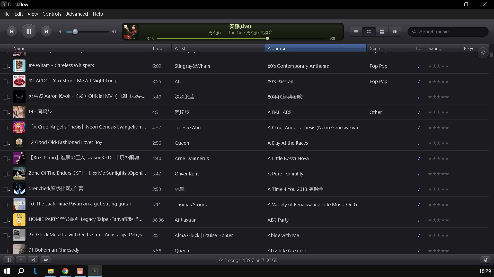

Duskflow
本地音乐播放器，专辑封面摆成一面可以转动的墙
已发布visionOSWindowsAndroidv1.1
介绍
Duskflow 是一个本地音乐播放器。它不联网、不接管你的音乐库、不复制也不转换文件——你放在哪里的歌，它就在哪里播。 最有辨识度的是 Album Flow：滚动鼠标滚轮，专辑封面像指尖下的卡片一样滑过，带弹簧惯性、封面倒影和舞台灯光。这是纯物理驱动的 3D 浏览，不是一排放大的方块。不想要 3D 也没关系，随时切回列表、专辑列表或网格。 Windows 版还有全局快捷键，切歌和暂停不用切窗口；支持 mp3、m4a、aac、flac、wav、ogg、opus。visionOS 版把专辑墙搬进了混合现实空间，在沉浸环境里听歌。 隐私上很简单：全程离线运行，没有网络请求、不收集数据、不上传，你的音乐永远在你的电脑里。
功能
- Album Flow 3D 专辑墙，弹簧惯性 + 封面倒影 + 舞台灯光
- 列表 / 专辑列表 / 网格三种视图随时切换
- 就地播放，不移动、不复制、不转换原文件
- Windows 全局快捷键，切歌暂停不用切窗口
- 支持 mp3 / m4a / aac / flac / wav / ogg / opus
- 全程离线，无网络请求、不收集数据
截图


